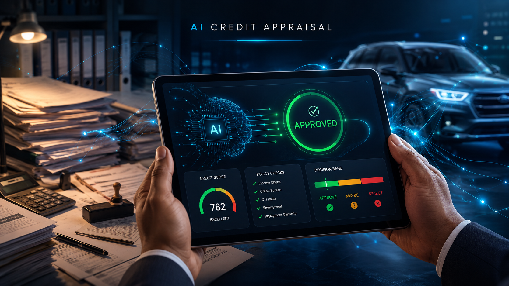

AI credit appraisal system
An end-to-end product build for auto-approving vehicle finance applications. The kind of tool I wished existed after ten years of watching credit files move through branches by hand. Complete product execution — PRD, database schema, policy engine with Approve/Maybe/Reject decision bands, and a working UI prototype.
22
database tables, 8 PostgreSQL functions deployed
- Supabase
- PostgreSQL
- React
- TypeScript
Portfolio-grade build, not production. Full walkthrough available.